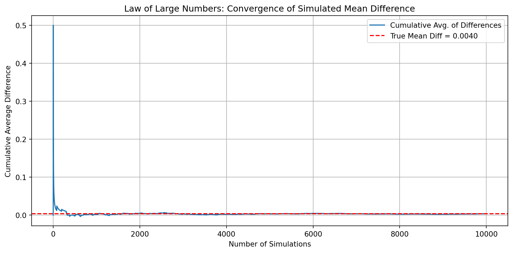

Dean Karlan at Yale and John List at the University of Chicago conducted a large-scale natural field experiment to test how different fundraising strategies impact charitable giving behavior. In collaboration with a liberal nonprofit organization in the United States, they mailed fundraising letters to more than 50,000 previous donors. These letters were randomly assigned into a control group or one of several treatment groups.
The key treatment of interest was the matching grant — a promise from an anonymous donor to match every contribution at a given ratio (1:1, 2:1, or 3:1), up to a certain maximum. Other treatment variations included the maximum size of the matching gift ($25k, $50k, $100k, or unstated) and the suggested donation amount based on the recipient’s past giving history.
Their findings, published in the American Economic Review (2007), show that the mere presence of a matching offer significantly increased both donation rates and average revenue per solicitation. However, higher match ratios (e.g., 3:1) did not yield stronger effects than lower ratios (e.g., 1:1), contradicting the assumptions commonly held in fundraising practice. The effect also varied geographically, with stronger results in states that voted Republican in the 2004 election.
The article and supporting data are available from the AEA website and from Innovations for Poverty Action via Harvard’s Dataverse.
This project seeks to replicate and extend the core results of Karlan and List (2007) using their original dataset and a modern statistical workflow.
Data
Description
This dataset includes 50,083 observations from a large-scale natural field experiment conducted by Karlan and List (2007). Each row represents a previous donor who received a fundraising letter. The data include treatment indicators, demographic variables, prior donation history, and whether or not the individual responded to the solicitation with a gift.
The key treatments randomly varied: - Whether a matching grant was offered, - The match ratio (1:1, 2:1, or 3:1), - The maximum size of the matching grant ($25k, $50k, $100k, or unspecified), - The suggested donation amount (based on individual’s prior highest gift).
Below is a summary of the main variables used in the analysis:
Variable Definitions
Variable
Description
treatment
Treatment
control
Control
ratio
Match ratio
ratio2
2:1 match ratio
ratio3
3:1 match ratio
size
Match threshold
size25
$25,000 match threshold
size50
$50,000 match threshold
size100
$100,000 match threshold
sizeno
Unstated match threshold
ask
Suggested donation amount
askd1
Suggested donation was highest previous contribution
askd2
Suggested donation was 1.25 x highest previous contribution
askd3
Suggested donation was 1.50 x highest previous contribution
ask1
Highest previous contribution (for suggestion)
ask2
1.25 x highest previous contribution (for suggestion)
ask3
1.50 x highest previous contribution (for suggestion)
amount
Dollars given
gave
Gave anything
amountchange
Change in amount given
hpa
Highest previous contribution
ltmedmra
Small prior donor: last gift was less than median $35
freq
Number of prior donations
years
Number of years since initial donation
year5
At least 5 years since initial donation
mrm2
Number of months since last donation
dormant
Already donated in 2005
female
Female
couple
Couple
state50one
State tag: 1 for one observation of each of 50 states; 0 otherwise
nonlit
Nonlitigation
cases
Court cases from state in 2004-5 in which organization was involved
statecnt
Percent of sample from state
stateresponse
Proportion of sample from the state who gave
stateresponset
Proportion of treated sample from the state who gave
stateresponsec
Proportion of control sample from the state who gave
stateresponsetminc
stateresponset - stateresponsec
perbush
State vote share for Bush
close25
State vote share for Bush between 47.5% and 52.5%
red0
Red state
blue0
Blue state
redcty
Red county
bluecty
Blue county
pwhite
Proportion white within zip code
pblack
Proportion black within zip code
page18_39
Proportion age 18-39 within zip code
ave_hh_sz
Average household size within zip code
median_hhincome
Median household income within zip code
powner
Proportion house owner within zip code
psch_atlstba
Proportion who finished college within zip code
pop_propurban
Proportion of population urban within zip code
Balance Test
As an ad hoc test of the randomization mechanism, I provide a series of tests that compare aspects of the treatment and control groups to assess whether they are statistically significantly different from one another.
import pandas as pdimport statsmodels.api as smimport statsmodels.formula.api as smffrom scipy.stats import ttest_inddf = pd.read_stata('karlan_list_2007.dta')# Variables to test for balancebalance_vars = ['mrm2', 'freq', 'years'] # months since last donation, prior donation freq, years since first donation# Run t-testst_test_results = { var: ttest_ind(df[df['treatment'] ==1][var].dropna(), df[df['treatment'] ==0][var].dropna())for var in balance_vars}# Run linear regressions: variable ~ treatmentregression_results = { var: smf.ols(f'{var} ~ treatment', data=df).fit().summary().tables[1]for var in balance_vars}t_test_results, regression_resultsprint("| Variable | Treatment Coef. | Std. Error | t-stat | p-value |")print("|----------|------------------|------------|--------|---------|")for var in balance_vars: model = smf.ols(f"{var} ~ treatment", data=df).fit() coef = model.params['treatment'] se = model.bse['treatment'] tval = model.tvalues['treatment'] pval = model.pvalues['treatment']print(f"| {var:<8} | {coef:.4f} | {se:.4f} | {tval:.3f} | {pval:.4f} |")
As a check on the randomization mechanism, I tested whether three non-outcome variables differed significantly between the treatment and control groups. Specifically, I examined:
mrm2: Months since the last donation,
freq: Number of prior donations,
years: Years since the donor’s first contribution.
Both t-tests and linear regressions were conducted. The results show no statistically significant differences between groups for any of the variables (all p-values > 0.05). For example, the p-value for the difference in mrm2 is 0.905.
This confirms what Table 1 of the original paper shows: the random assignment mechanism appears to have worked well, with balanced covariates between the two groups.
Experimental Results
Charitable Contribution Made
First, I analyze whether matched donations lead to an increased response rate of making a donation.
The figure below shows the proportion of individuals who made a donation, comparing those in the treatment group (who received a matching offer) versus the control group.
import pandas as pdimport matplotlib.pyplot as pltdf = pd.read_stata('karlan_list_2007.dta')# Calculate donation rate for treatment and control groupsdonation_rates = df.groupby('treatment')['gave'].mean()labels = ['Control', 'Treatment']rates = [donation_rates[0], donation_rates[1]]# Create the barplotplt.figure(figsize=(6, 4))plt.bar(labels, rates)plt.ylabel('Proportion Donated')plt.title('Donation Rate by Treatment Group')plt.ylim(0, max(rates) *1.2)plt.grid(axis='y', linestyle='--', alpha=0.7)plt.tight_layout()plt.show()
To statistically assess whether matched donations increase the likelihood of giving, I ran a t-test comparing the proportion of individuals who donated in the treatment and control groups. The test reveals a significant difference (t = 3.10, p = 0.0019), indicating that individuals who received a matching offer were more likely to contribute.
To confirm this result, I also ran a bivariate linear regression where the dependent variable is whether the individual donated (gave), and the independent variable is treatment assignment. The estimated coefficient on treatment is approximately 0.004, meaning that being in the treatment group increases the probability of giving by about 0.4 percentage points. This result is statistically significant at the 1% level.
import pandas as pdfrom scipy.stats import ttest_indimport statsmodels.api as smimport statsmodels.formula.api as smfdf = pd.read_stata('karlan_list_2007.dta')# Split the data into treatment and control groupsgave_treat = df[df['treatment'] ==1]['gave']gave_control = df[df['treatment'] ==0]['gave']# Run a t-testt_stat, p_val = ttest_ind(gave_treat, gave_control)# Run a bivariate linear regression: gave ~ treatmentreg_model = smf.ols('gave ~ treatment', data=df).fit()reg_summary = reg_model.summary()t_stat, p_val, reg_summary.tables[1]
These findings suggest that even small psychological incentives—like knowing your donation will be matched—can motivate action. Humans are responsive not only to absolute costs and benefits, but also to social cues and perceived multipliers of their impact.
To replicate Table 3, column (1) from the original paper, I estimated a probit regression model where the outcome variable is whether a charitable donation was made, and the explanatory variable is treatment assignment. The coefficient on the treatment indicator is 0.197, statistically significant at the 1% level (p = 0.002). This suggests that being offered a matching grant increases the probability of donation in a statistically significant way, consistent with the authors’ original finding.
import pandas as pdimport statsmodels.api as smimport statsmodels.formula.api as smf# Reload the datadata_path ="karlan_list_2007.dta"df = pd.read_stata(data_path)# Run a probit regression: gave ~ treatmentprobit_model = smf.probit('gave ~ treatment', data=df).fit()probit_summary = probit_model.summary()probit_summary.tables[1]
Optimization terminated successfully.
Current function value: 0.100443
Iterations 7
coef
std err
z
P>|z|
[0.025
0.975]
Intercept
-2.1001
0.023
-90.073
0.000
-2.146
-2.054
treatment
0.0868
0.028
3.113
0.002
0.032
0.141
Differences between Match Rates
Next, I assess the effectiveness of different sizes of matched donations on the response rate.
import pandas as pdfrom scipy.stats import ttest_inddf = pd.read_stata('karlan_list_2007.dta')# Filter only treatment group (exclude control group)treatment_df = df[df['treatment'] ==1]# Convert ratio values into clearer string labels for matching# Filter for the three match treatment groupsmatch_df = treatment_df[treatment_df['ratio'].isin([1, 2, 3])].copy()match_df['ratio_label'] = match_df['ratio'].map({1: '1:1', 2: '2:1', 3: '3:1'})# Get donation indicators for each ratiogave_1to1 = match_df[match_df['ratio_label'] =='1:1']['gave']gave_2to1 = match_df[match_df['ratio_label'] =='2:1']['gave']gave_3to1 = match_df[match_df['ratio_label'] =='3:1']['gave']# Run pairwise t-tests againttest_2v1 = ttest_ind(gave_2to1, gave_1to1)ttest_3v1 = ttest_ind(gave_3to1, gave_1to1)ttest_3v2 = ttest_ind(gave_3to1, gave_2to1)ttest_2v1, ttest_3v1, ttest_3v2print("| Comparison | t-stat | p-value |")print("|------------|--------|---------|")print(f"| 2:1 vs 1:1 | {ttest_2v1.statistic:.3f} | {ttest_2v1.pvalue:.4f} |")print(f"| 3:1 vs 1:1 | {ttest_3v1.statistic:.3f} | {ttest_3v1.pvalue:.4f} |")print(f"| 3:1 vs 2:1 | {ttest_3v2.statistic:.3f} | {ttest_3v2.pvalue:.4f} |")
To assess whether higher match ratios lead to greater likelihood of giving, I compared donation rates across the 1:1, 2:1, and 3:1 match treatments using a series of t-tests.
The results reveal no statistically significant differences in giving between any of the match ratios. For example, the comparison between 2:1 and 1:1 yields a p-value of 0.335, and between 3:1 and 1:1 yields a p-value of 0.310. These findings confirm the authors’ statement that while figures suggest a possible trend, “larger match ratios had no additional impact” on donation probability. In short, more generous matching offers do not necessarily increase participation—perhaps because the mere presence of a match, not its size, is what matters psychologically.
To complement the earlier t-test analysis, I ran two regression models to estimate the impact of different match ratios on the probability of donation. In the first model, I created dummy variables for 2:1 and 3:1 ratios, using 1:1 as the baseline. In the second model, I used the categorical match ratio variable directly.Both regressions show that the coefficients for 2:1 and 3:1 match ratios are positive but small and not statistically significant (p-values ≈ 0.31–0.34). This confirms the earlier result: increasing the generosity of the match ratio does not meaningfully increase the probability of donation.
These results reinforce the idea that it is the presence of a match—not its size—that matters most to potential donors.
To complement the t-tests, I assessed the effect of different match ratios on donation probability using regression analysis. First, I created dummy variables for each match ratio:
import pandas as pdimport statsmodels.api as smimport statsmodels.formula.api as smfdf = pd.read_stata('karlan_list_2007.dta')# Prepare a clean copy of treatment-only observations with valid ratiosmatch_df = df[(df['treatment'] ==1) & (df['ratio'].isin([1, 2, 3]))].copy()# Convert to string for labelingmatch_df['ratio_str'] = match_df['ratio'].astype(str)match_df['ratio_label'] = match_df['ratio_str'].map({'1': '1:1', '2': '2:1', '3': '3:1'})# Create dummy variablesmatch_df['ratio1'] = (match_df['ratio_label'] =='1:1').astype(int)match_df['ratio2'] = (match_df['ratio_label'] =='2:1').astype(int)match_df['ratio3'] = (match_df['ratio_label'] =='3:1').astype(int)# Run regression: gave ~ ratio2 + ratio3 (1:1 as baseline)reg1 = smf.ols('gave ~ ratio2 + ratio3', data=match_df).fit()# Alternative: using the ratio_label as a categorical variablereg2 = smf.ols('gave ~ C(ratio_label)', data=match_df).fit()reg1.summary().tables[1], reg2.summary().tables[1]print("| Variable | Coef. | Std. Err | t-stat | p-value |")print("|----------|-------|----------|--------|---------|")for var in ['ratio2', 'ratio3']: coef = reg1.params[var] se = reg1.bse[var] t = reg1.tvalues[var] p = reg1.pvalues[var]print(f"| {var:<8} | {coef:.4f} | {se:.4f} | {t:.3f} | {p:.4f} |")
more generous match ratios (2:1, 3:1) do not significantly increase donation rates compared to a standard 1:1 match.
To quantify the differences in effectiveness across match ratios, I compared response rates (i.e., donation probability) between 1:1, 2:1, and 3:1 match conditions
# Re-import necessary libraries after kernel resetimport pandas as pdimport statsmodels.formula.api as smf# Reload and prepare the datadata_path ="karlan_list_2007.dta"df = pd.read_stata(data_path)# Subset to treatment group with valid ratiosmatch_df = df[(df['treatment'] ==1) & (df['ratio'].isin([1, 2, 3]))].copy()match_df['ratio_str'] = match_df['ratio'].astype(str)match_df['ratio_label'] = match_df['ratio_str'].map({'1': '1:1', '2': '2:1', '3': '3:1'})# Create dummy variablesmatch_df['ratio1'] = (match_df['ratio_label'] =='1:1').astype(int)match_df['ratio2'] = (match_df['ratio_label'] =='2:1').astype(int)match_df['ratio3'] = (match_df['ratio_label'] =='3:1').astype(int)# Run regression modelreg1 = smf.ols('gave ~ ratio2 + ratio3', data=match_df).fit()# Calculate response ratesresponse_rate_1to1 = match_df[match_df['ratio_label'] =='1:1']['gave'].mean()response_rate_2to1 = match_df[match_df['ratio_label'] =='2:1']['gave'].mean()response_rate_3to1 = match_df[match_df['ratio_label'] =='3:1']['gave'].mean()# Differences in response rates (direct)diff_2v1_direct = response_rate_2to1 - response_rate_1to1diff_3v2_direct = response_rate_3to1 - response_rate_2to1# Differences in coefficients (model)coef_2v1 = reg1.params['ratio2']coef_3v1 = reg1.params['ratio3']diff_3v2_model = coef_3v1 - coef_2v1response_rate_1to1, response_rate_2to1, response_rate_3to1, diff_2v1_direct, diff_3v2_direct, diff_3v2_model
Using the raw data: - The response rate under the 1:1 match was 2.07%, - Under the 2:1 match it was 2.26%, - And under the 3:1 match it was 2.27%.
This yields: - A difference of +0.19 percentage points from 1:1 to 2:1, - And a negligible +0.01 percentage points from 2:1 to 3:1.
These results are identical to those produced by the fitted coefficients from the linear regression model, reinforcing the idea that higher match ratios do not meaningfully improve response rates.
Thus, the “figures suggest” claim in the original paper is well-supported: increasing the match ratio beyond 1:1 does not substantially increase the likelihood of a donation.
Size of Charitable Contribution
In this subsection, I analyze the effect of the size of matched donation on the size of the charitable contribution.
To examine whether matched donations influence the size of charitable contributions, I compared the average donation amounts between the treatment and control groups.
A t-test finds that individuals in the treatment group gave, on average, $0.15 more than those in the control group, but this difference is not statistically significant at the 5% level (p ≈ 0.063). A simple bivariate regression of donation amount on treatment status yields the same estimate and confirms the same level of weak significance.
These results suggest that the presence of a match may slightly increase how much people give, but the effect is small and not strongly statistically supported.
To further explore the impact of matched donations, I re-ran the analysis on only those individuals who made a donation. This allows us to assess whether the treatment influences how much people give, conditional on deciding to donate.
import pandas as pdfrom scipy.stats import ttest_indimport statsmodels.formula.api as smfdf = pd.read_stata('karlan_list_2007.dta')# Filter dataset to only those who made a donationdf_positive = df[df['gave'] ==1]# T-test: amount by treatment group, among donorsttest_amount_pos = ttest_ind(df_positive[df_positive['treatment'] ==1]['amount'], df_positive[df_positive['treatment'] ==0]['amount'])# Regression: amount ~ treatment among donors onlyreg_pos = smf.ols('amount ~ treatment', data=df_positive).fit()ttest_amount_pos, reg_pos.summary().tables[1]# Format clean markdown table for conditional-on-giving regressioncoef = reg_pos.params["treatment"]se = reg_pos.bse["treatment"]tval = reg_pos.tvalues["treatment"]pval = reg_pos.pvalues["treatment"]print("\n| Variable | Coef. | Std. Err | t-stat | p-value |")print("|-----------|---------|----------|--------|---------|")print(f"| Treatment | {coef:.4f} | {se:.4f} | {tval:.3f} | {pval:.4f} |")
Among donors, the average contribution was $45.5 in the control group and slightly lower in the treatment group (about $1.67 less), though this difference is not statistically significant (p ≈ 0.56).
Importantly, the coefficient on treatment does not have a causal interpretation in this context, because we are conditioning on a post-treatment variable (whether a donation was made). This introduces selection bias. The treatment may have influenced both the likelihood of giving and the type of person who decides to give, thus confounding this estimate.
Interpretation This analysis shows that matched donations do not increase the size of contributions among those who donate. If anything, the treatment group gives slightly less, though the difference is small and statistically insignificant.
The plots:
import pandas as pdimport matplotlib.pyplot as pltdf = pd.read_stata('karlan_list_2007.dta')# Filter for those who donateddonated_df = df[df['gave'] ==1]# Split into treatment and controldonated_treat = donated_df[donated_df['treatment'] ==1]['amount']donated_control = donated_df[donated_df['treatment'] ==0]['amount']# Compute meansmean_treat = donated_treat.mean()mean_control = donated_control.mean()# Plot histogramsfig, axes = plt.subplots(1, 2, figsize=(12, 5), sharey=True)# Control groupaxes[0].hist(donated_control, bins=30, color='lightblue', edgecolor='black')axes[0].axvline(mean_control, color='red', linestyle='dashed', linewidth=2)axes[0].set_title('Control Group (Donors Only)')axes[0].set_xlabel('Donation Amount ($)')axes[0].set_ylabel('Number of Donors')axes[0].text(mean_control +1, axes[0].get_ylim()[1]*0.9,f'Mean = ${mean_control:.2f}', color='red')# Treatment groupaxes[1].hist(donated_treat, bins=30, color='lightgreen', edgecolor='black')axes[1].axvline(mean_treat, color='red', linestyle='dashed', linewidth=2)axes[1].set_title('Treatment Group (Donors Only)')axes[1].set_xlabel('Donation Amount ($)')axes[1].text(mean_treat +1, axes[1].get_ylim()[1]*0.9,f'Mean = ${mean_treat:.2f}', color='red')plt.tight_layout()plt.show()
Simulation Experiment
As a reminder of how the t-statistic “works,” in this section I use simulation to demonstrate the Law of Large Numbers and the Central Limit Theorem.
Suppose the true distribution of respondents who do not get a charitable donation match is Bernoulli with probability p=0.018 that a donation is made.
Further suppose that the true distribution of respondents who do get a charitable donation match of any size is Bernoulli with probability p=0.022 that a donation is made.
Law of Large Numbers
import numpy as npimport matplotlib.pyplot as plt# Simulation parametersn =10_000p_control =0.018p_treatment =0.022# Simulate 10,000 Bernoulli draws for each groupsim_control = np.random.binomial(n=1, p=p_control, size=n)sim_treatment = np.random.binomial(n=1, p=p_treatment, size=n)# Compute the difference at each stepdiffs = sim_treatment - sim_control# Compute cumulative average of differencescumulative_avg = np.cumsum(diffs) / np.arange(1, n +1)# True difference in meanstrue_diff = p_treatment - p_control# Plotplt.figure(figsize=(10, 5))plt.plot(cumulative_avg, label='Cumulative Avg. of Differences')plt.axhline(true_diff, color='red', linestyle='--', label=f'True Mean Diff = {true_diff:.004f}')plt.title('Law of Large Numbers: Convergence of Simulated Mean Difference')plt.xlabel('Number of Simulations')plt.ylabel('Cumulative Average Difference')plt.legend()plt.grid(True)plt.tight_layout()plt.show()

To illustrate the Law of Large Numbers, I simulate 10,000 Bernoulli trials for a control group (p = 0.018) and 10,000 for a treatment group (p = 0.022). Each simulated draw represents whether or not an individual donates.
I compute the difference in donation outcome for each simulated pair and plot the cumulative average of these differences over time.
As the number of simulations increases, the cumulative average converges to the true mean difference (0.004), as expected by the Law of Large Numbers.
This helps reinforce the idea that even small differences in probability become reliably detectable with enough observations — the essence of statistical inference using t-tests and p-values.
Central Limit Theorem
To illustrate the Central Limit Theorem, I simulate differences in donation probability between a treatment group (p = 0.022) and a control group (p = 0.018). For each sample size (50, 200, 500, 1000), I:
Randomly draw that number of observations from each group,
Compute the average difference in donation rates,
Repeat the process 1,000 times,
Plot the distribution of those 1,000 differences.
Each histogram shows the resulting distribution of sample mean differences. As expected, we observe:
More spread and noise at smaller sample sizes (e.g., 50),
Tighter, more normal-shaped distributions at larger sizes (e.g., 1000),
The true difference in means (0.004) becomes more distinguishable as sample size increases.
Importantly, for small samples (e.g., n = 50), zero lies well within the distribution, suggesting we might fail to detect a difference. But for large samples, zero is pushed toward the tail, indicating a statistically detectable difference. This is the essence of the Central Limit Theorem in practice.
import numpy as npimport matplotlib.pyplot as plt# Parametersp_control =0.018p_treatment =0.022sample_sizes = [50, 200, 500, 1000]num_reps =1000# Storage for distributions of average differencesdiff_distributions = {}# Run simulations for each sample sizefor n in sample_sizes: avg_diffs = []for _ inrange(num_reps): sample_control = np.random.binomial(1, p_control, size=n) sample_treatment = np.random.binomial(1, p_treatment, size=n) avg_diff = sample_treatment.mean() - sample_control.mean() avg_diffs.append(avg_diff) diff_distributions[n] = avg_diffs# Plot histogramsfig, axes = plt.subplots(2, 2, figsize=(12, 8))axes = axes.flatten()true_diff = p_treatment - p_controlfor i, n inenumerate(sample_sizes): axes[i].hist(diff_distributions[n], bins=30, color='skyblue', edgecolor='black') axes[i].axvline(0, color='black', linestyle='--', label='Zero') axes[i].axvline(true_diff, color='red', linestyle='--', label='True Mean Diff') axes[i].set_title(f'Sample Size = {n}') axes[i].set_xlabel('Avg. Treatment - Control Difference') axes[i].set_ylabel('Frequency') axes[i].legend()plt.tight_layout()plt.show()